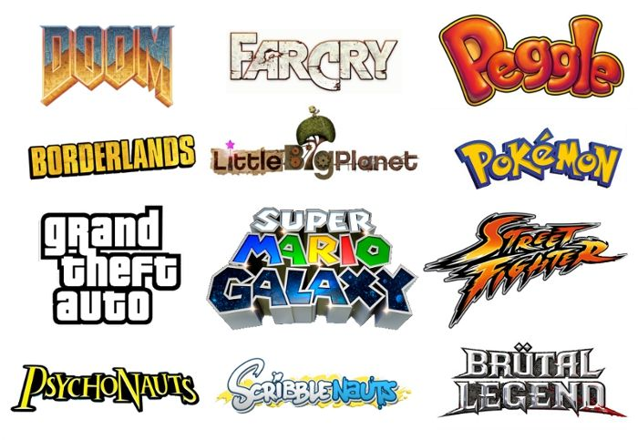

Components of video games
To distinguish from electronic games, a video game is generally considered to require a platform, the hardware which contains computing elements, to process player interaction from some type of input device and displays the results to a video output display.
Platform
Video games require a platform, a specific combination of electronic components or computer hardware and associated software, to operate.[24] The term system is also commonly used. Games are typically designed to be played on one or a limited number of platforms, and exclusivity to a platform is used as a competitive edge in the video game market.[25] However, games may be developed for alternative platforms than intended, which are described as ports; these also may be remasters - where most of the original game's source code is reused while art assets, models, and game levels are updated for modern systems - and remakes, where in addition to asset improvements, significant reworking of the original game and possibly from scratch is performed.[26] The list below is not exhaustive and excludes other electronic devices capable of playing video games such as PDAs and graphing calculators. Computer game Most computer games are PC games, referring to those that involve a player interacting with a personal computer (PC) connected to a video monitor.[27] Personal computers are not dedicated game platforms, so there may be differences running the same game on different hardware. Also, the openness allows some features to developers like reduced software cost,[28] increased flexibility, increased innovation, emulation, creation of modifications or mods, open hosting for online gaming (in which a person plays a video game with people who are in a different household) and others. A gaming computer is a PC or laptop intended specifically for gaming typically using high-performance, high-cost components. In additional to personal computer gaming, there also exist games that work on mainframe computers and other similarly shared systems, with users logging in remotely to use the computer. Home console A console game is played on a home console, a specialized electronic device that connects to a common television set or composite video monitor. Home consoles are specifically designed to play games using a dedicated hardware environment, giving developers a concrete hardware target for development and assurances of what features will be available, simplifying development compared to PC game development. Usually consoles only run games developed for it, or games from other platform made by the same company, but never games developed by its direct competitor, even if the same game is available on different platforms. It often comes with a specific game controller. Major console platforms include Xbox, PlayStation, and Nintendo. Handheld console A handheld gaming device is a small, self-contained electronic device that is portable and can be held in a user's hands. It features the console, a small screen, speakers and buttons, joystick or other game controllers in a single unit. Like consoles, handhelds are dedicated platforms, and share almost the same characteristics. Handheld hardware usually is less powerful than PC or console hardware. Some handheld games from the late 1970s and early 1980s could only play one game. In the 1990s and 2000s, a number of handheld games used cartridges, which enabled them to be used to play many different games. The handheld console has waned in the 2010s as mobile device gaming has become a more dominant factor.
Game media
Early arcade games, home consoles, and handheld games were dedicated hardware units with the game's logic built into the electronic componentry of the hardware. Since then, most video game platforms have means to use multiple games distributed on different types of media or formats. Physical formats include ROM cartridges, magnetic storage including magnetic tape data storage and floppy discs, optical media formats including CD-ROM and DVDs, and flash memory cards. Furthermore digital distribution over the Internet or other communication methods as well as cloud gaming alleviate the need for any physical media. In some cases, the media serves as the direct read-only memory for the game, or it may be the form of installation media that is used to write the main assets to the player's platform's local storage for faster loading periods and later updates. Games can be extended with new content and software patches through either expansion packs which are typically available as physical media, or as downloadable content nominally available via digital distribution. These can be offered freely or can be used to monetize a game following its initial release. Several games offer players the ability to create user-generated content to share with others to play. Other games, mostly those on personal computers, can be extended with user-created modifications or mods that alter or add onto the game; these often are unofficial and were developed by players from reverse engineering of the game, but other games provide official support for modding the game.
Input device
Video game can use several types of input devices to translate human actions to a game. Most common are the use of game controllers like gamepads and joysticks for most consoles, and as accessories for personal computer systems along keyboard and mouse controls. Common controls on the most recent controllers include face buttons, shoulder triggers, analog sticks, and directional pads ("d-pads"). Similar control sets are built into handheld consoles and onto arcade cabinets. Newer technology improvements have incorporated additional technology into the controller or the game platform, such as touchscreens and motion detection sensors that give more options for how the player interacts with the game. Specialized controllers may be used for certain genres of games, including racing wheels, light guns and dance pads. Digital cameras and motion detection can capture movements of the player as input into the game, which can, in some cases, effectively eliminate the control, while on other systems such as virtual reality, are used to enhance immersion into the game.
Display and output. Video game graphics Handheld units, like the Game Boy, include built-in output screens and sound speakers. By definition, all video games are intended to output graphics to an external video display, such as cathode-ray tube televisions, newer liquid-crystal display (LCD) televisions and built-in screens, projectors or computer monitors, depending on the type of platform the game is played on. Features such as color depth, refresh rate, frame rate, and screen resolution are a combination of the limitations of the game platform and display device and the program efficiency of the game itself. The game's output can range from fixed displays using LED or LCD elements, text-based games, two-dimensional and three-dimensional graphics, and augmented reality displays. The game's graphics are often accompanied by sound produced by internal speakers on the game platform or external speakers attached to the platform, as directed by the game's programming. This often will include sound effects tied to the player's actions to provide audio feedback, as well as background music for the game. Some platforms support additional feedback mechanics to the player that a game can take advantage of. This is most commonly haptic technology built into the game controller, such as causing the controller to shake in the player's hands to simulate a shaking earthquake occurring in game.